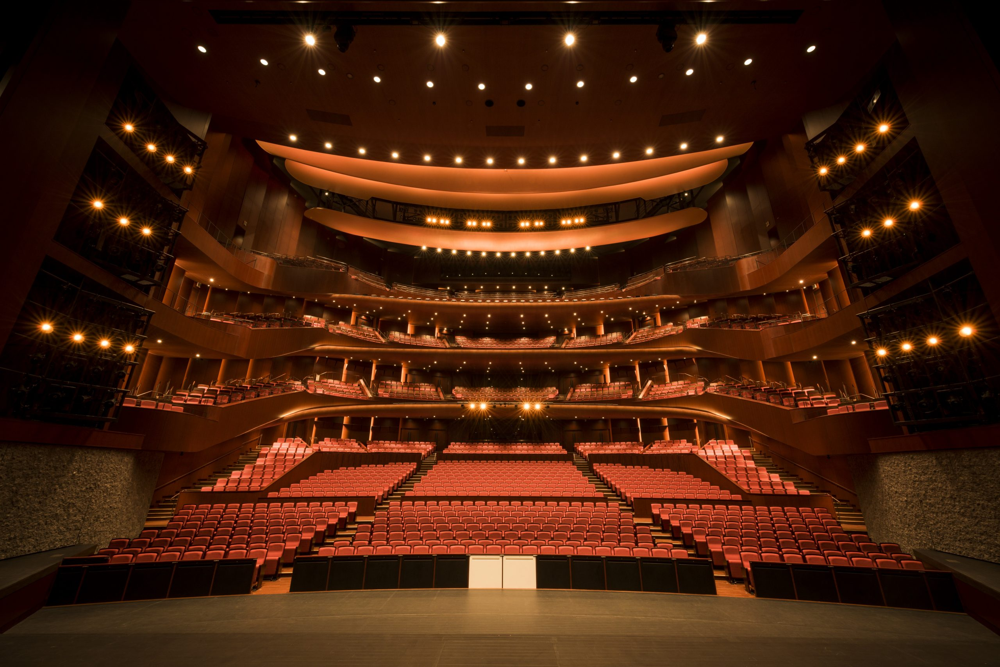
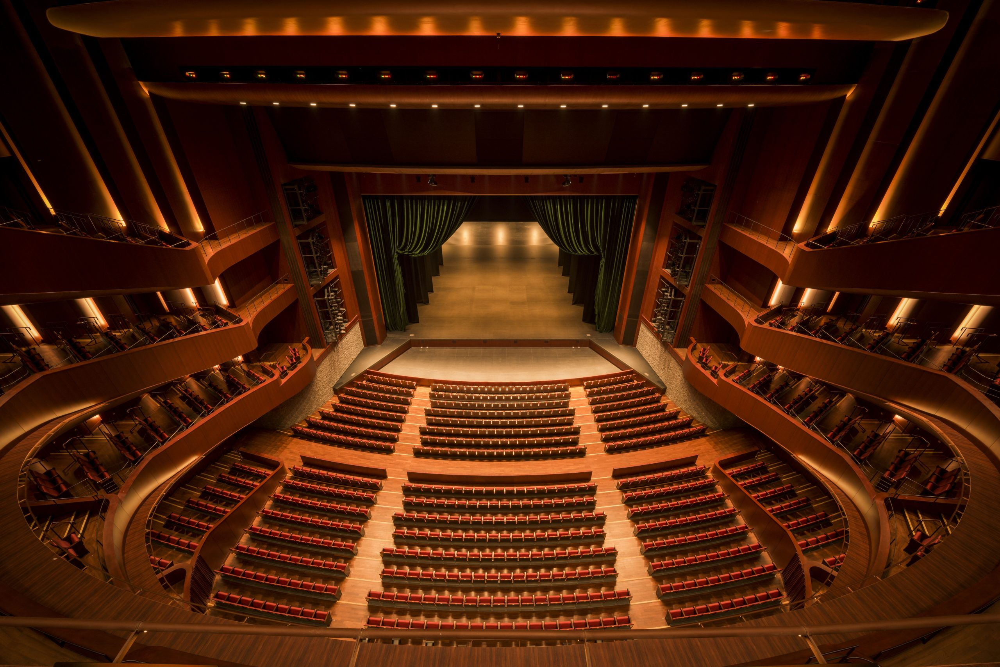

Theater
극장 입장(지정석)
1,000엔
최종 선정 작품 상영·시상식(hitaru·12:00~15:00). 선행 300석. 좌석은 12월에 teket 교환 코드로 선택할 수 있습니다.

삿포로 국제 AI 영화제 2027
Sapporo International AI Film Festival & Incubation
삿포로 국제 AI 영화제는불꽃이다. 새로운 창작 수단을손에 쥔 사람들에게서태어나는 이야기를온몸으로 느끼고, 기리며, 그곳에서다음 창작자와다음 이야기를낳아 가기 위한,축제의 불꽃이다.
당신은 무엇을 만들 것인가? 보여 달라. 끝까지 모두 지켜볼 테니. 작품 공모는 곧 시작됩니다. 공모 요강이 공개되면 이메일로 알려 드립니다.
공모 시작 알림 받기 For Creators이야기를 풀어놓아라. 전 세계에서 AI를 창작에 활용한 영상 작품을 공모합니다.응모 접수는 12월 시작 예정.응모 접수 중.참가비는 $10, 1인 1편(최대 2편). 장르 불문. 응모 창구는 FilmFreeway.
공모 요강 보기(12월 접수 시작 예정) 공모 요강 보기 공모 요강(접수 종료) For Audiences어둠 속에서 큰 스크린 위로 세계가 일어선다. 이야기에 온몸으로 흠뻑 젖는 하루. 10월 하순부터 크라우드펀딩(CAMPFIRE)에서 선행 후원을 받습니다. 극장 입장 1,000엔·지정석.
선행 판매 알림 받기 For Audiences어둠 속에서 큰 스크린 위로 세계가 일어선다. 옆자리의 누군가가 숨을 멈추고, 웃고, 운다. 이야기에 온몸으로 흠뻑 젖는 하루.선행 후원은 10월 하순부터(CAMPFIRE·11월 하순까지).극장 입장 1,000엔·지정석.일반 판매는 12월부터.SCARTS 셀렉션 상영은 무료.
티켓 선행 판매·방문 안내 티켓·방문 안내 For Sponsors다음 창작자와 가장 먼저 만나는 자리. 교류회에서의 크리에이터와의 접점을 중심으로 스폰서를 모집합니다.
후원(협찬) 안내상영, 강연·토크, 교류회를 따로따로의 기획이 아닌 하나의 흐름으로 설계합니다. 관람으로 끝나지 않고 다음 창조로 이어지는 하루.
12:00 – 15:00
극장 상영·시상식(hitaru)
최종 선정 작품을 극장의 큰 스크린으로. 관객석의 웃음, 침묵, 놀라움까지 함께 하나의 작품을 받아들입니다. 뛰어난 작품과 크리에이터를 기리는 시상식도 열립니다.2차 선정 작품은 SCARTS에서 종일 무료 상영합니다.
16:30 – 17:45
크리에이터 강연·토크(SCARTS 코트)
AI를 실제 영상 제작에 쓰는 창작자들이 발상과 시행착오를 공유합니다. 타인의 창조력에 닿아, "나도 만들 수 있을지도 모르는 것"이 조금 늘어난 채로 돌아갑니다.
17:45 – 19:00
교류회(Incubation)
크리에이터와 기업, 학생과 프로, 일본과 해외. "거기가 이어지는구나" 하는 만남에서 다음 작품, 팀, 일이 움직이기 시작합니다.
수상 작품은 개최 후 공식 채널 등에서 온라인 공개합니다. 현장에 오지 못한 분에게도 이야기는 전해집니다.
공모 시작·심사위원 발표·크라우드펀딩 진행 상황·티켓 발매 소식을 이메일로 전해 드립니다.
공모 마감 2027년 3월 31일(수) 23:59. 3~15분·16:9·장르 불문. 그랑프리, 심사위원 특별상, 기업상, SAPPORO상, 우수상.
2027년 5월 4일, 삿포로 문화예술극장 hitaru / SCARTS. 극장 입장 1,000엔·지정석.SCARTS 셀렉션 상영은 무료.선행 후원은 10월 하순부터 CAMPFIRE에서(11월 하순까지).티켓은 teket에서 판매 중.작품 응모도 접수 중입니다.작품 공모는 12월에 접수 시작 예정입니다.
티켓·타임테이블·오시는 길은 여기에서.SCARTS 상영은 무료·자유 입장입니다.
제1회 수상작과 기록을 공개 중입니다. 다음 회 공모 시작은 X에서 알려 드립니다.
제1회 개최 자금을 크라우드펀딩(CAMPFIRE)으로 모집합니다. 티켓 선행 후원도 이곳에서. 2026년 10월 하순~11월 하순.
크라우드펀딩(CAMPFIRE·2026년 10월 하순~11월 하순)은 종료되었습니다. 후원해 주신 모든 분을 불씨 번호와 함께 후원자 소개 페이지에 게재하고 있습니다.
Theater
1,000엔
최종 선정 작품 상영·시상식(hitaru·12:00~15:00). 선행 300석. 좌석은 12월에 teket 교환 코드로 선택할 수 있습니다.
Online Archive
1,000엔
강연·토크 녹화 영상을 개최 후 약 1개월간 스트리밍. 멀리 계신 분도.
Full Access
5,000엔
극장 입장 + 강연·토크(현장) + 교류회. CAMPFIRE 한정·50석.
모든 후원자에게 불씨 번호를 부여하고 후원자 소개 페이지에 표기명을 게재합니다(최소 개최 후 1년간). 수상 작품은 후원자에게 개최 다음 날부터 1주일간 선행 상영한 뒤 온라인으로 일반 공개합니다. 1만 엔 코스는 "프리미엄 서포터", 5만 엔 코스는 "파운딩 서포터".
선행 판매 결제는 CAMPFIRE에서 이루어지며, 후원금은 환불되지 않습니다.
제1회 개최를 함께 만들어 갈 스폰서를 모집합니다. 로고 노출만이 아니라, 교류회에서 크리에이터와 직접 만나는 접점을. 이곳은 hitaru의 객석과 스크린에 광고를 틀지 않는 영화제입니다. 협찬 신청 마감은 2027년 4월 25일.